This document describes specifications of the bitmap fonts built into CTR, font scale settings, and associated precautions. Although this information is primarily intended for the designers who create layout data, this document also includes information regarding projects that use the internal bitmap fonts. Therefore, some content is also intended for those in charge of planning and direction. See 3. Font Specifications and 5. Font Scale Settings.
Data that could not be included in this document is located in the accompanying package.
The term "America" used in this document refers to the region covered by NOA, while "Europe" refers to the region covered by NOE.
Lists of characters included in the CTR internal bitmap fonts
When a manual is intended for use with the software, a display of legal rights is not required.
As a rule, modifications cannot be made. If you need to make changes, contact Nintendo at support@noa.com.
Four types of font data are included in the CTR internal bitmap fonts. The four types are: font data for Japan, America, and Europe; Simplified Chinese; Hangul; and Traditional Chinese. Font data for Japanese, American, and European languages is displayed for systems in the Japanese, American, or European region; Simplified Chinese is used for systems in the Chinese region; Hangul is used for systems in the Korean region; and Traditional Chinese is used for systems in the Taiwanese region.
These four types of font data primarily differ in terms of the design of character shapes and the characters included. However, all types have some ASCII, alphabetic characters, and katakana characters in common.
Specifications of font data for each region will be covered below.
These are the specifications for the internal bitmap font found in the file "cbf_std.bcfnt" used with systems for the Japanese, American, and European regions. cbf_std.bcfnt is located in the following directory.
$CTR_SDK/resources/shareddata/data/font/std
Table 3-1 Specifications of the CTR Internal Bitmap Font for Japanese, American, and European Languages
| Item | Specifications | Comments |
|---|---|---|
| Bitmap font name | cbf_std.bcfnt |
|
| Supported system regions |
・Japan ・America ・Europe |
See Section 3.1.1, Supported Languages, for more information about supported languages. |
| Number of characters included | 7501 characters | |
| Example of included characters |
・ASCII ・Latin alphabet ・European characters (Greek, Cyrillic, etc.) ・Symbols ・Kana characters (hiragana, katakana, half-width katakana) ・Kanji (JIS Level 1, Level 2) ・Nintendo extended characters |
For details on included characters, see the related resource CTR_builtins_characters-ctr_std.pdf. Character set listing ・ASCII 95 ・cp 1252 ・ISO 8859-1 (Latin-1) ・cp 1253 ・ISO 8859-7 ・JIS standards (kana, half-width katakana, JIS Level 1 and Level 2 Kanji) |
| Size setting for initial characters | 24 px | It can be enlarged or reduced. For more information, see 5. Font Scale Settings. |
| Levels | 16 levels (4 bits) | |
|
Maximum character width List of corresponding characters |
100 % (24/24px) ・% (Unicode U+0025) ・Kana characters and Kanji |
This list contains characters that require the greatest display width. |
| Data size |
・When compressed: 1,445,691 Byte ・When uncompressed: 3,124,592 Byte ・Render buffer size: 30,020 Byte |
The maximum amount of memory required when using this font is calculated by adding the render buffer size to the uncompressed size. |
Languages for the following regions are supported.
Table 3-2 Languages Supported by the CTR Internal Bitmap Font for Japanese, American and European Languages
| Font names | Regions | Language | ||
|---|---|---|---|---|
cbf_std.bcfnt |
Japan | ・Japanese | ||
| The Americas |
・American English ・French (Canada) ・Spanish (Latin America) ・Portuguese (Brazil) |
|||
| Europe |
・British English ・French ・German ・Italian ・Dutch ・Portuguese ・Russian ・Spanish |
・Greek ・Swedish ・French ・Norwegian ・Danish ・Czech ・Hungarian ・Polish ・Turkish ・Irish |
・Icelandic ・Estonian ・Latvian ・Lithuanian ・Slovakian ・Slovenian ・Maltese ・Bulgarian ・Romanian |
|
Figure 3-1 Display Sample
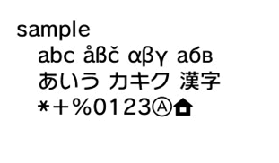
This section describes the specifications of the built-in bitmap format cbf_zh-Hans-CN.bcfnt used by systems in the Chinese region.
cbf_zh-Hans-CN.bcfnt is located in the following directory.
$CTR_SDK/resources/shareddata/data/font/cn
Table 3-3 Specifications of the CTR Internal Bitmap Font for Simplified Chinese
| Item | Specifications | Comments |
|---|---|---|
| Bitmap font name | cbf_zh-Hans-CN.bcfnt | |
| Supported system regions |
China |
|
| Number of characters included | 7977 characters | |
| Supported Languages | Simplified Chinese | |
| Example of included characters |
・ASCII ・Latin alphabet ・European characters (Greek, Cyrillic, etc.) ・Symbols ・Kana characters (hiragana, katakana, half-width katakana) ・Kanji (GB 2312) ・Nintendo extended characters |
For more information about included characters, see the related resource CTR_builtInFont_characters-ctr_cn.pdf. Character code sets: ・ASCII 95 ・cp 1252 ・ISO 8859-1 (Latin-1) ・cp 1253 ・ISO 8859-7 ・Full Width ASCII 94 ・Hirakana Katakana 169 ・Hanzi Common Level 1 2500 ・Hanzi Common Level 2 998 ・GB 2312 ・Symbols used in Japanese, American, and European fonts |
| Size setting for initial characters | 24 px | It can be enlarged or reduced. For more information, see 5. Font Scale Settings. |
| Levels | 16 levels (4 bits) | |
|
Maximum character width List of corresponding characters |
100 % (24/24px) ・§ (Unicode U+00A7) ・Kana characters and Kanji |
This list contains characters that require the greatest display width. |
| Data size |
・Compressed: 1,515,569 bytes ・Unpacked: 2,937,484 bytes ・Render buffer size: 880 bytes |
The maximum amount of memory required when using this font is calculated by adding the render buffer size to the uncompressed size. |
Figure 3-2 Display Sample
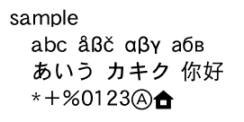
This section describes the specifications of the built-in bitmap font cbf_ko-Hang-KR.bcfnt used by systems in the Korean region.
cbf_ko-Hang-KR.bcfnt is located in the following directory.
$CTR_SDK/resources/shareddata/data/font/kr
Table 3-4 Specifications of the CTR Internal Bitmap Font for Hangul
| Item | Specifications | Comments |
|---|---|---|
| Bitmap font name | cbf_ko-Hang-KR.bcfnt | |
| Supported system regions |
Korea |
|
| Number of characters included | 3795 characters | |
| Supported Languages | Korean | |
| Example of included characters |
・ASCII ・Latin alphabet ・European characters (Greek, Cyrillic, etc.) ・Symbols ・Kana characters (hiragana, katakana, half-width katakana) ・Hangul (KSX1001 2350) ・Nintendo extended characters |
For more information about included characters, see the related resource CTR_builtInFont_characters-ctr_kr.pdf. Character code sets: ・ASCII 95 ・cp 1252 ・ISO 8859-1 (Latin-1) ・cp 1253 ・ISO 8859-7 ・Full Width ASCII 94 ・Hangul Symbol 539 ・Hangul Jamo Compatibility 94 ・KSX1001 2350 ・Additional characters used to input Korean. ・Symbols used in Japanese, American, and European fonts |
| Size setting for initial characters | 24 px | It can be enlarged or reduced. For more information, see 5. Font Scale Settings. |
| Levels | 16 levels (4 bits) | |
|
Maximum character width List of corresponding characters |
100 % (24/24px) ・§ (Unicode U+00A7) ・Kana characters and Kanji |
This list contains characters that require the greatest display width. |
| Data size |
・Compressed: 527,782 bytes ・Unpacked: 1,400,192 bytes ・Render buffer size: 420 bytes |
The maximum amount of memory required when using this font is calculated by adding the render buffer size to the uncompressed size. |
Figure 3-3 Display Sample
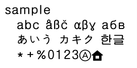
This section describes the specifications of the built-in bitmap font cbf_zh-Hant-TW.bcfnt used by systems in the Taiwan region.
cbf_zh-Hant-TW.bcfnt is located in the following directory.
$CTR_SDK/resources/shareddata/data/font/tw
Table 3-5 Specifications of the CTR Internal Bitmap Font for Traditional Chinese
| Item | Specifications | Comments |
|---|---|---|
| Bitmap font name | cbf_zh-Hant-TW.bcfnt | |
| Supported system regions |
Taiwan |
|
| Number of characters included | 14338 characters | |
| Supported Languages | Traditional Chinese | |
| Example of included characters |
・ASCII ・Latin alphabet ・European characters (Greek, Cyrillic, etc.) ・Symbols ・Kana characters (hiragana, katakana, half-width katakana) ・Kanji (CP 950) ・Nintendo extended characters |
For more information about included characters, see the related resource CTR_builtInFont_characters-ctr_tw.pdf. Character code sets: ・ASCII 95 ・cp 1252 ・ISO 8859-1 (Latin-1) ・cp 1253 ・ISO 8859-7 ・Full Width ASCII 94 ・Hiragana Katakana 169 ・CP 950 ・Symbols used in Japanese, American, and European fonts |
| Size setting for initial characters | 19 px | It can be enlarged or reduced. For more information, see 5. Font Scale Settings. |
| Levels | 16 levels (4 bits) | |
|
Maximum character width List of corresponding characters |
100 % (19/19px) ・Katakana and kanji |
This list contains characters that require the greatest display width. |
| Data size |
・Compressed: 1,829,426 bytes ・Unpacked: 3,350,100 bytes ・Render buffer size: 31,860 bytes |
The maximum amount of memory required when using this font is calculated by adding the render buffer size to the uncompressed size. |
Figure 3-4 Display Sample
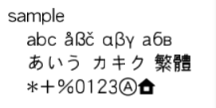
Characters specially designed by Nintendo are included in the private region of Unicode. Characters created during the RVL development cycle and Unicode code assignments are inherited. Blue cells (U+E000 to E006 and E01E and E057) contain extended characters that have been overwritten and replaced, while red cells (U+E070 to E07E) contain extended characters that have been newly added.
Figure 4-1 List of Nintendo Extended Characters
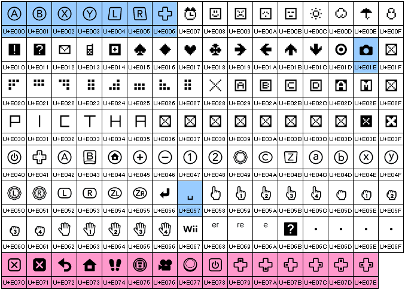
Table 4-1 Summary of Nintendo Extended Characters
| Unicode | Details | Comments |
|---|---|---|
|
U+E000 through E006 U+E077 through E07E |
Characters representing CTR hard keys | The shape of a hard key for NTR is displayed for the Unicode shown in the blue cells when using the system font for RVL or TWL. |
| U+E007 through E03F | Characters used by NTR and TWL | |
| U+E040 through E06F | Characters used with RVL | |
| U+E070 through E076 | Characters used with CTR |
For the extended character that represents the POWER Button, use the U+E078 character, which has a square border.
The U+E078 character has the same shape as the POWER Button on the Nintendo 3DS, and the U+E040 character has the same shape as the POWER Button on the Nintendo 3DS XL.
However, use the U+E078 character to be consistent because it is used to indicate the POWER Button in all Nintendo 3DS system features and applications.
Although the default size of CTR internal bitmap fonts is 24 pixels, characters can be scaled. We recommend that character size be selected carefully, particularly for projects being localized for the Chinese, Korean, or Taiwanese regions. Legibility is reduced for the characters with a large number of strokes, such as kanji, in these language regions compared to characters such as hiragana, katakana, and alphabetic letters. Scale values recommended to maintain legibility are given below. Basically, we recommend that characters fit inside the following area.
Table 5-1 Scale Value Guidelines for Maintaining Legibility
| Guideline Item | Scale value | Corresponding character size | Comments |
|---|---|---|---|
| Average values | 1.0 through 0.7 | For sizes 24 pixels to 16 pixels | When using characters inside this size range, you can maintain a certain degree of legibility throughout all regions. |
| Minimum value | 0.52 | 12.48 px | This is the minimum value. However, we recommend that you use a value as close as possible to the average value range given above because many characters will be hard to discern with this value. |
| Maximum value | 1.0 | 24 px | Some distortion occurs with values greater than or equal to 1.0. |
Note: Character size values given in pixels represent the value when screen resolution is 72.
This is a display sample when fitting text onto a 320 x 240 screen. The actual size differs from that shown.
Figure 5-1 Display Sample
Characters Intended for Japanese, American, and European Languages
| Scale value: 0.52 (equivalent to 12.48 pixels). | Scale value: 0.70 (equivalent to 16.8 pixels). |
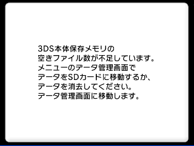 |
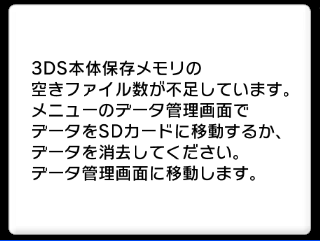 |
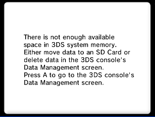 |
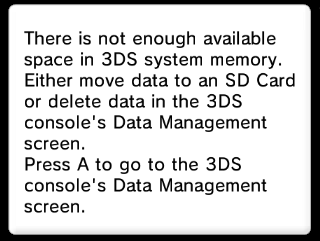 |
Simplified Chinese
| Scale value: 0.52 (equivalent to 12.48 pixels). | Scale value: 0.70 (equivalent to 16.8 pixels). |
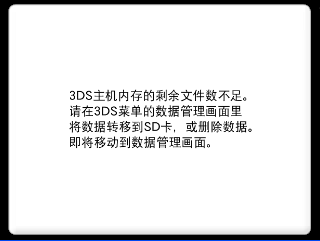 |
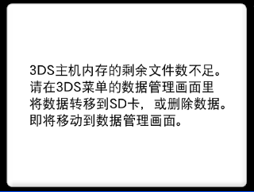 |
Hangul
| Scale value: 0.52 (equivalent to 12.48 pixels). | Scale value: 0.70 (equivalent to 16.8 pixels). |
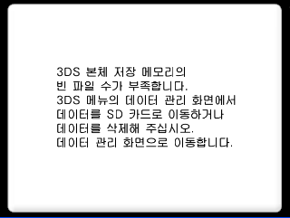 |
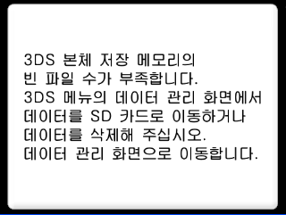 |
Traditional Chinese
| Scale value: 0.65 (equivalent to 12.48 pixels). | Scale value: 0.88 (equivalent to 16.8 pixels). |
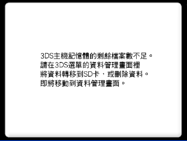 |
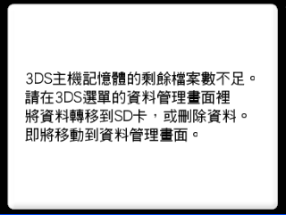 |
Note: Because the internal character size of Traditional Chinese differs from other system fonts, the scale value actually differs even though the actual visual size for both fonts is the same.
When using NW4C LayoutEditor, there is more than one parameter that can be used to change the scale of the character size. However, if you are using CTR internal bitmap fonts, we recommend that you make changes using the "scale" parameter shown in the following figure.
Figure 5-2 Parameter When Changing the Character Scale Value Using NW4C LayoutEditor
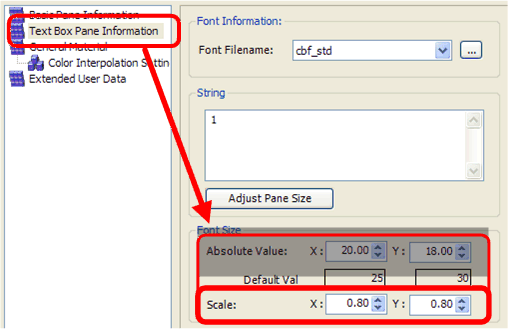
Note: If a CTR internal bitmap font is being used with NW4C LayoutEditor, the correct font size is not reflected in "Default value" or "Absolute value." Specifications have been implemented such that the size is actually slightly smaller than the value displayed for the absolute value. We therefore recommend that you change the scale using the "scale" parameter.
Although CTR internal bitmap fonts are created by inheriting the specifications of RVL and TWL internal bitmap fonts, modifications have been made to some characters, such as to the character shapes and character widths.
The most representative example of the character width changing from that used with RVL and TWL system fonts is with Cyrillic characters. Currently, Cyrillic characters are displayed in fixed width with most fonts used on PCs. CTR system fonts are designed so that Cyrillic characters are displayed using proportional widths.
Figure 6-1 Display of Cyrillic Characters
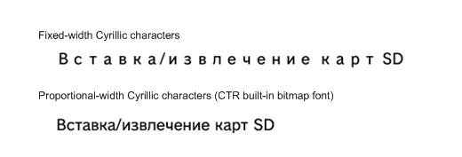
This is a list of characters where the shape has changed from that used with the internal bitmap fonts of RVL and TWL. (See Figure 6-2). There are also some characters that may cause problems during development due to specifications typically where there are multiple interpretations. A list that compares these characters to RVL and TWL internal bitmap fonts is attached. (See Figure 6-3) When you move characters back and forth between hardware systems, such and CTR and RVL, and need to check differences in character shapes between these characters and other characters, use this list as a reference for the type of shape displayed for these characters.
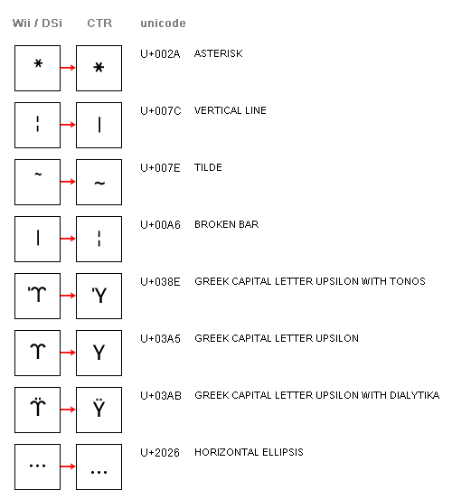
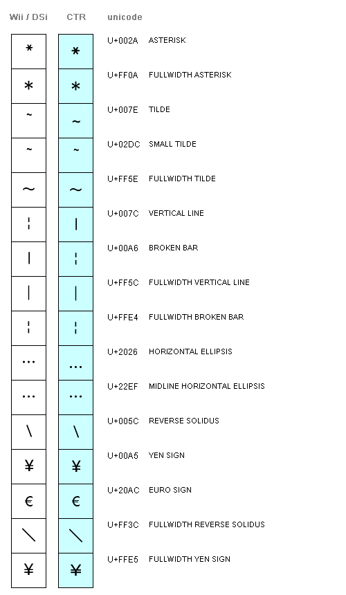
The term "alternate character" is used to refer to a character that is displayed instead of another when the character specified by the application cannot be displayed by the internal bitmap font. The character given by U+E06B is used as the default alternate character when using CTR internal bitmap fonts.
Figure 6-4 Alternate Characters
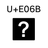
For information about displaying Mii nicknames and creator names, see the section on creating Mii nicknames and creator names in 3DS Guidelines.
Traditional Chinese is the only character set that does not include the character U+00A0 NO-BREAK SPACE.
Simplified Chinese is the only character set that does not include the character U+007F DEL.
The parameter setup screen for FontConverter when creating a CTR internal bitmap font is attached. A CTR internal bitmap font is output according to the parameter settings for the attached image. At this time, parameters whose values differ depending on which language the font is being created for are emphasized using a red border. Please use this for reference when creating bitmap fonts using FontConverter.
Figure 7-1 Creating a Bitmap Image from an Outline Font Installed on a PC
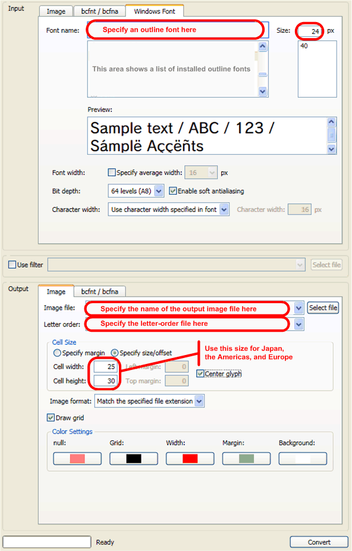
Figure 7-2 Creating a Bitmap Font from a Bitmap Image
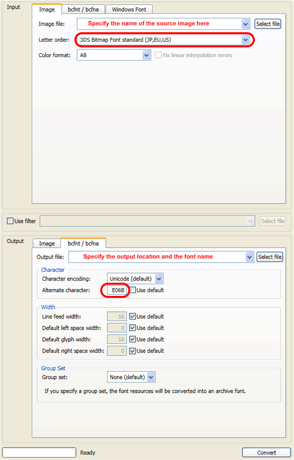
CONFIDENTIAL